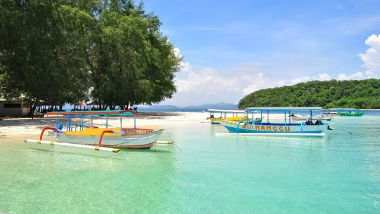

10 Tempat Wisata Terbaik di Indonesia yang Mendunia, Alamnya Indah

Tempat wisata terbaik di Indonesia tentu sudah banyak diketehui wisatawan mancanegara. Bahkan destinasi-destinasi
seperti Bali telah menjadi tempat liburan langganan turis dalam negeri maupun mancanegara. Namun, tidak hanya
Bali saja tempat wisata yang mengagumkan di Indonesia. Banyak sekali tempat wisata yang unik dan tidak bisa
ditemukan di tempat lainnya yang ada di Indonesia. Bahkan Indonesia memang sudah menjadi tempat favorit untuk
liburan para turis mancanegara, beberapa bintang Hollywood pernah menikmati keindahan wisata Indonesia. Tempat
wisata terbaik di Indonesia tentunya memiliki keindahan tersendiri yang tidak dimiliki tempat lain. Hal inilah
yang tentunya membuat banyak orang tertarik mengunjunginya. Mulai dari tempat wisata berupa dataran tinggi bahkan
sampai daerah wisata dengan lautan yang indah bisa kamu temukan di Indonesia.
Baca selengkapnya
12 Lagu NCT DREAM Cocok Didengar saat Santai, Merdu!
NCT Dream dikenal memiliki vibe ceria dan lagu yang positif. Tidak salah kalau lagu-lagunya banyak didengarkan agar lebih
semangat menjalani hari. Nah, buat kamu yang saat ini sedang butuh playlist baru, deretan lagu NCT DREAM ini cocok kamu
putar untuk menambah semangatmu. Gak perlu berlama-lama lagi, langsung simak lagu Korea mereka di bawah ini.
Baca selengkapnya
Universitas Sam Ratulangi (UNSRAT) - Info Jurusan, Biaya, dan Beasiswa
Sejarah panjang Universitas Sam Ratulangi dimulai pada 1 Oktober 1954 dengan didirikannya Universitas Pinaesaan. Setelah
beberapa kali berubah status dan nama, akhirnya pada tanggal 14 September 1965, berdasarkan Surat Keputusan Presiden
Republik Indonesia Nomor 277, berdirilah Universitas Sam Ratulangi. Universitas ini terletak di Kota Manado, ibukota
Provinsi Sulawesi Utara. Sebagai kota pantai, Manado memiliki garis pantai sepanjang 18,7 kilometer. Quipperian yang
menyukai laut dan pantai bisa menikmati keindahan alam bawah lautnya yang terkenal itu sambil berkuliah di kampus ini.
Baca selengkapnya